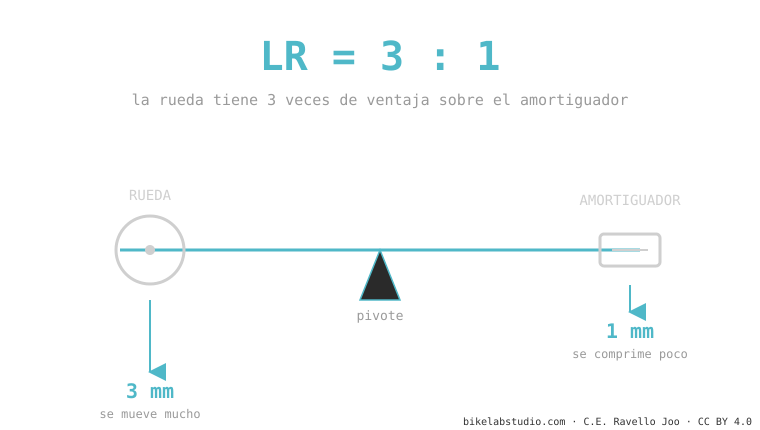

El leverage ratio es cuántos milímetros se mueve la rueda trasera por cada milímetro que se comprime el amortiguador. Si la rueda baja 3 mm y el amortiguador 1 mm, el leverage ratio es 3:1. No es un número fijo: cambia a lo largo del recorrido, y esa curva —no el promedio— decide si tu bici es progresiva, lineal o regresiva. Es la pieza madre de toda la cinemática de suspensión.
Si solo te quedas con una idea de toda la suspensión, que sea esta. El leverage ratio es la palanca invisible entre tu rueda y el amortiguador, y explica por qué dos bicis con el mismo recorrido se sienten completamente distintas.
¿Por qué una llave larga afloja un perno que tu mano sola no puede? Por palanca: cuanto más largo el brazo, más se multiplica tu fuerza.
Tu rueda y el amortiguador están unidos por un sistema de barras que hace exactamente eso: multiplica. El leverage ratio responde una pregunta simple: ¿cuánto se mueve la rueda por cada milímetro que se comprime el amortiguador?

Es una división, nada más: recorrido de la rueda ÷ recorrido (stroke) del amortiguador. Una bici con 150 mm de rueda y un amortiguador de 50 mm de stroke tiene un leverage ratio promedio de 150 ÷ 50 = 3,0. Es adimensional (no lleva unidad): solo dice "3 a 1".
Un leverage ratio alto (por ejemplo 3:1 o más) le da más ventaja a la rueda sobre el amortiguador: la suspensión se siente más sensible, pero el amortiguador trabaja más duro, así que pide más presión de aire o un muelle más rígido para sostener tu peso. Uno bajo pide menos presión y suele dar más soporte, pero menos sensibilidad fina. Ni uno ni otro es "mejor": es el carácter que el ingeniero eligió.
Dos bicis pueden tener el mismo leverage ratio promedio (digamos 2,7) y sentirse opuestas: una arranca en 3,2 y baja a 2,2 (progresiva, aguanta topes); otra se mantiene plana en 2,7 (lineal). Por eso comparar bicis solo por el "leverage ratio promedio" es como comparar dos canciones solo por su duración. La forma es todo — y eso lo vemos en la curva de progresividad.
Cuánto se mueve la rueda por cada mm del amortiguador. 3 mm de rueda por 1 mm de amortiguador = 3:1.
No: distinto. Alto = más sensible pero pide más presión/muelle. Lo que decide es la forma de la curva, no el número.
Cambia con la compresión, no con el pedaleo. Cada punto del recorrido tiene su propio valor (instantáneo).
Dinos el modelo y te decimos su curva y qué amortiguador (aire o muelle) le saca lo mejor. Escríbenos por WhatsApp